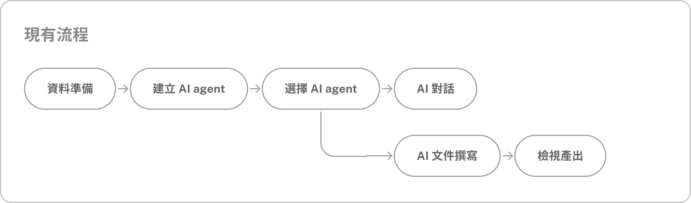
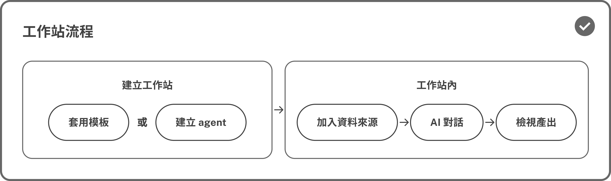
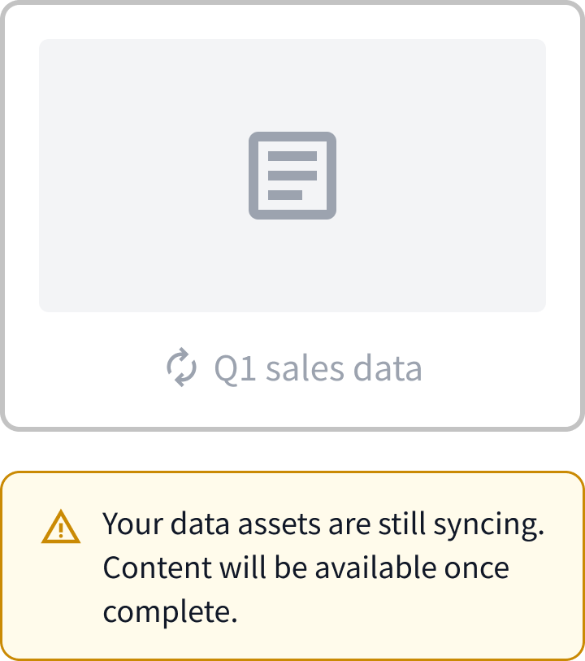
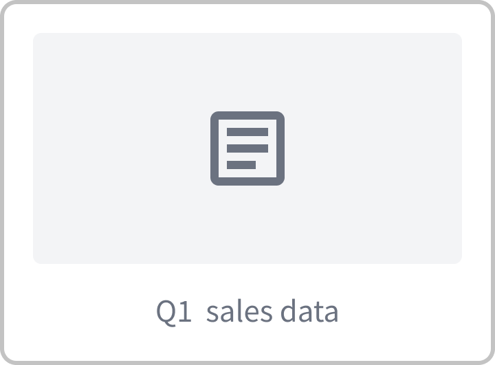
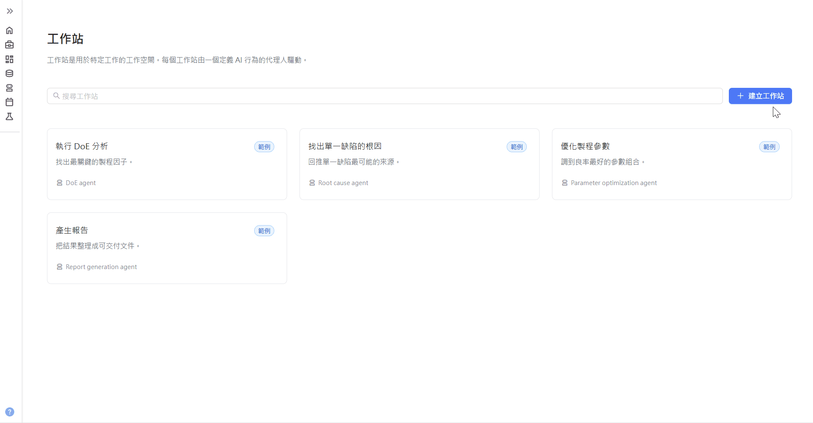
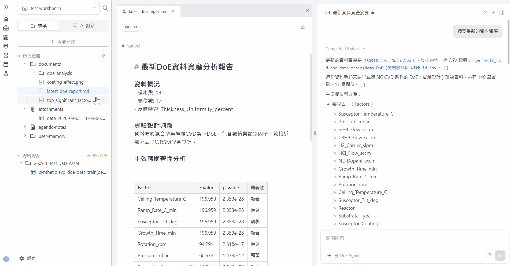
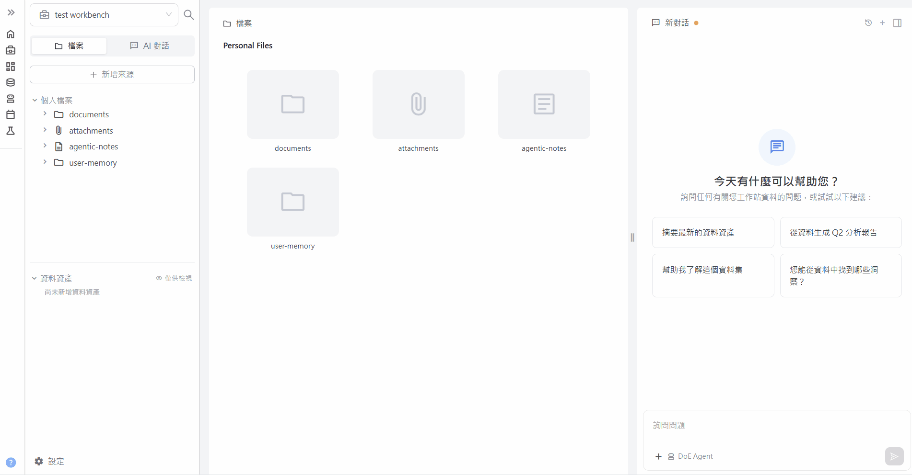

Build a workspace that lowers the barrier for researchers to work with AI
Tricuss is an enterprise AI agent platform for R&D teams. It helps researchers design experiments, analyze data, and write research reports.
Researchers used to jump between scattered data, AI chats, and outputs to get one task done. I designed Workbench from 0 to 1 to bring everything into a single workspace, with AI agent templates that make it easy to get started and clear status feedback that shows what the AI is doing at every step.
Redesigning AI agent workflows for a new architecture
Previously, finishing a research task on Tricuss meant working through a complex setup and switching between features. When the team upgraded the AI agent architecture and the execution environment, we had an opportunity to rethink the product experience.
I took this as a chance to redefine how researchers collaborate with AI, turning a fragmented process into a simpler, more cohesive workflow.
Project goal: Bring data, AI chats, and outputs into one workspace for seamless AI collaboration
Complex workflows made it hard for researchers to configure, navigate, and trust AI agents
Before designing, I identified 3 key pain points through heuristic evaluation and customer feedback.


Defining design goals around user pain points and business needs
I also factored in the business context. Client trials are short, so the design needed to deliver value quickly and make adoption more likely. With both user needs and business goals in mind, I defined three design goals:
Shorten time to value
Match users’ mental models
Build trust through visible status
Designing the Workbench flow and structure around how researchers work
01Making Workbench setup easy
To lower the barrier to setup, I mapped the existing flow with the team and looked for steps to simplify or merge. In practice, Admins usually configure AI agents and Members reuse their settings. So I merged agent creation into Workbench setup and designed AI agent templates, letting users apply existing settings and start working right away.


02Choosing a layout that fits how researchers work
I analyzed 6 AI-native workspaces to understand how they organize work and what role AI plays in the workflow. They fell into two broad types:

Key insight: Editing-oriented tools match how researchers work — reading large volumes of material while collaborating with AI throughout. So I chose a layout with files as the main workspace and AI chat pinned to the right.
03Making AI collaboration trustworthy
I designed visible status feedback for each stage of interacting with an AI agent, so users always know what’s happening and can build trust over time.
Here’s how it works before, during, and after an interaction:
01Before an interaction
Imported data takes time to sync, and until it finishes, the AI agent can’t fully read the files. I designed UI and system messages for each sync state, so users can see sync progress and know when files are ready to use.



02During an interaction
I mapped each step the AI agent takes from receiving an instruction to replying, confirmed the steps with our AI engineers, and designed how the AI’s thinking appears at each stage. Users can follow its progress while they wait, which takes the uncertainty out of waiting.
Click a tag to jump to that step- Find all project files
-
Read log files
- tool-Find Files Completed
- tool-Read File Completed
- Inspect dependencies
Completed 3 steps
- Find all project files
- Read log files
- Inspect dependencies
Found 24 files in the workspace, mostly environment config and dependencies — no application code. Logs are JSON; measurement files are CSV.
03After an interaction
Working with an AI agent generates many files, charts, and logs. They used to be unorganized, so users struggled to find what they needed or tell what they could edit. I first separated files by whether they can be edited, then grouped editable files into folders named for their purpose, so users can see at a glance what each file is for and what they can do with it.
.png)
.png)
04Validating with internal testing
I ran 5 internal usability tests. The key finding: users didn’t understand the folder structure, so they couldn’t immediately find files they had uploaded or generated. Restructuring would be costly, so after discussing with the developers, we first tried automatically opening files after upload to see whether that made files easier to find, before committing to structural changes.
“I think I’d remember what each folder is for after a while, but at first it feels a bit odd.”
— Participant 1
“Why ‘attachment’? I’m trying to work out the difference between attachment and document.”
— Participant 2
“When I look for a file I uploaded, I instinctively expect it in the data asset section.”
— Participant 3
The Workbench: data, conversations, and outputs in one place
01Quick setup with templates
Merged AI agent and Workbench setup into one flow, cut setup down to the essentials, and added templates so users can reuse their team’s settings and start working right away

02Three columns: files first, chat alongside
Files are the main workspace and AI chat stays pinned to the right, so researchers can read through large amounts of material while discussing it with AI

03Visible file and AI status
From importing data to getting AI replies and finding files, every step gives clear status feedback, so users can follow progress and trust the results

Design system

From design to MVP launch in 2 months
I owned the end-to-end design, from user flows and UI to the design system, and worked with engineering to ship the MVP in 2 months. The team and CEO agreed it successfully brought together the data, AI conversations, and document outputs that had been scattered across the platform.
Reflections & learnings
01Driving change on an engineering-led team with limited resources
Before I joined, the CEO and engineers led product design, so the interface reflected a technical perspective — and the existing architecture made big changes hard. Within those constraints, I learned to balance user experience against development resources and improve the product in phases, from quick, low-cost wins to structural changes that need longer-term investment.
02Internal testing can’t replace real user feedback
Internal testing revealed friction in the flow, but we still need to confirm it fits how researchers actually work. Next, I want to learn from real customers’ behavior and feedback how the Workbench fits into their workflows, and keep iterating based on actual use.